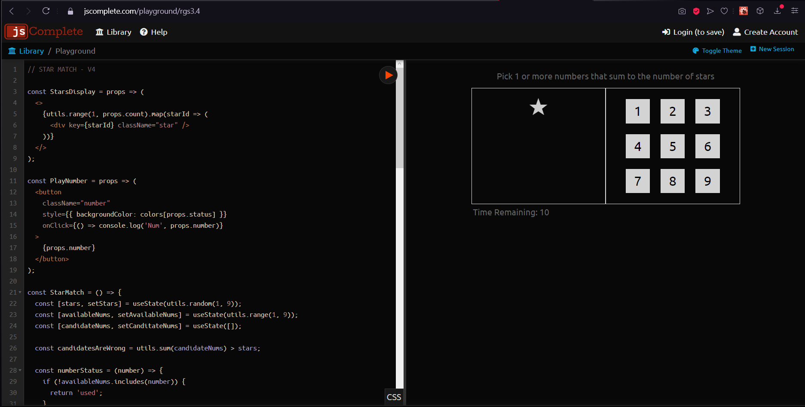

CAPITULO 4
Se define una función qué hacer en cada click numérico que se llama onNumberClick y esta función recibe
el número en el que se hizo click
por lo que cuando hacemos click en él puede comunicar este estado al onNumberClick. Cuando hacemos click
en un número informamos el estado
del número en el que se hizo click desde onNumberClick, se pasa el comportamiento onNumberClick al
componente PlayNumber ese es el
componente en el que vamos a hacer click, también se define un nuevo accesorio que se llama onClick y se
lo pasa como onNumberClick así es
como el comportamiento principal le dice al comportamiento secundario que comportamiento invocar cada
vez que se hace click en él, y en el
componente PlayNumber se recibe este comportamiento como apoyo y accedemos a el como props.onClick y se
va a invocar el comportamiento que
fue definido por el padre y se puede pasar en que número se hace click y también se puede pasar cuál es
el estado del número en el que se
hace click en lugar de calcular el estado nuevamente y pasamos props.status en el onNumberClick, esta
función recibe el número en el que
se hizo click y el estado actual del número en el que se hizo click.
